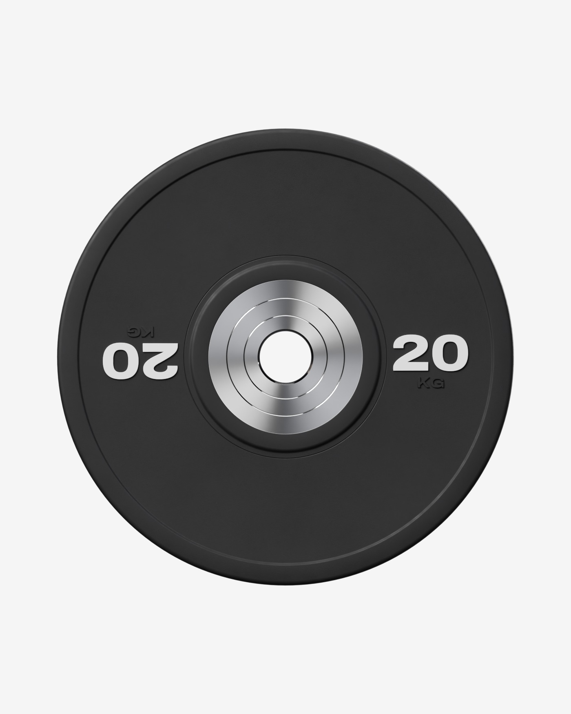
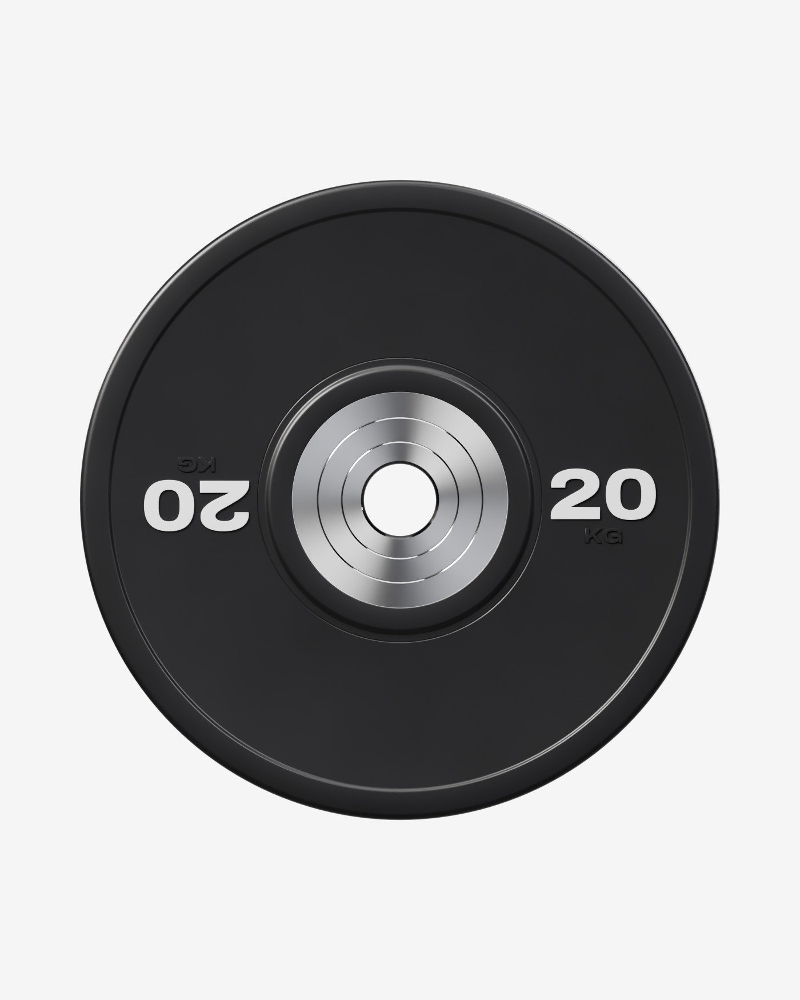
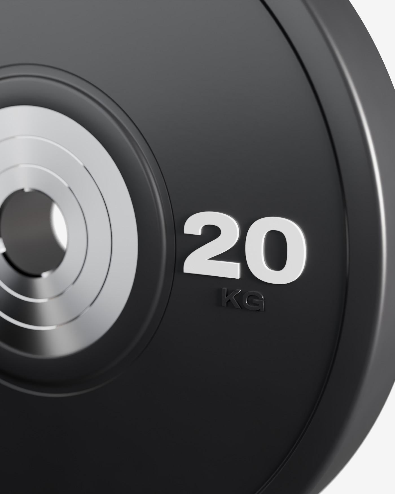
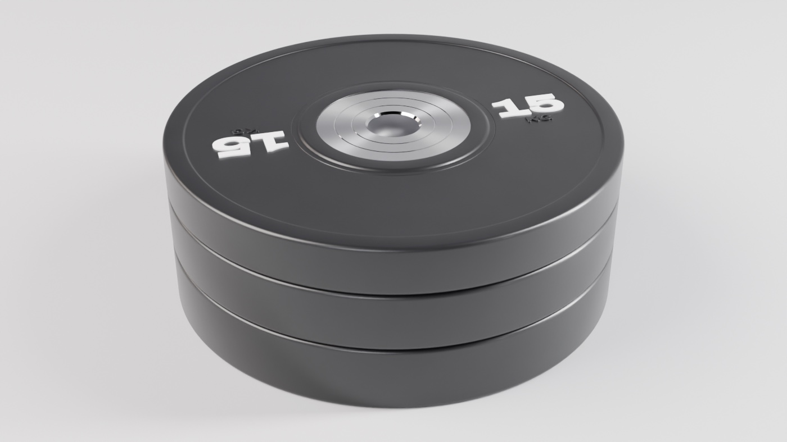
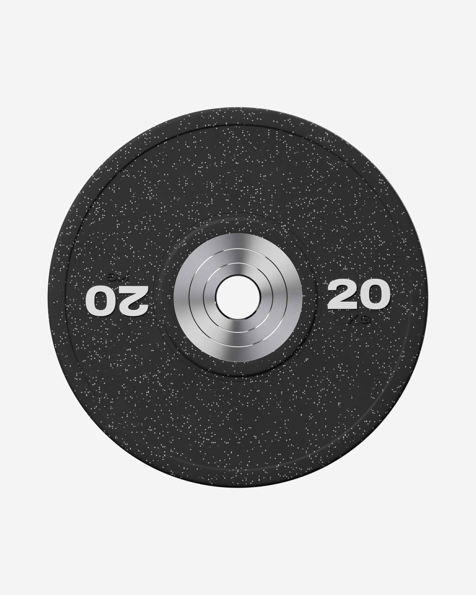
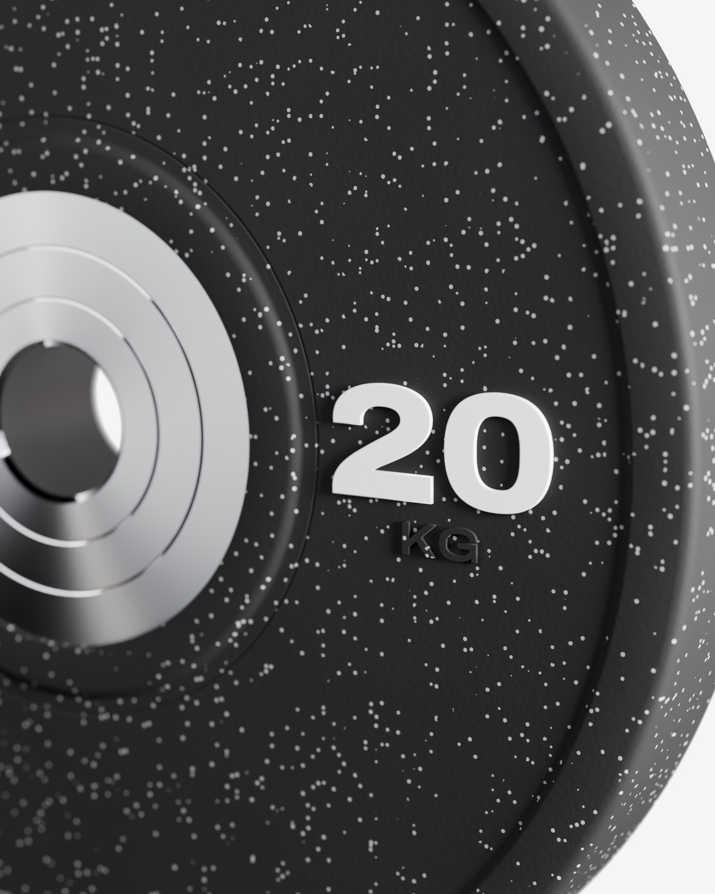
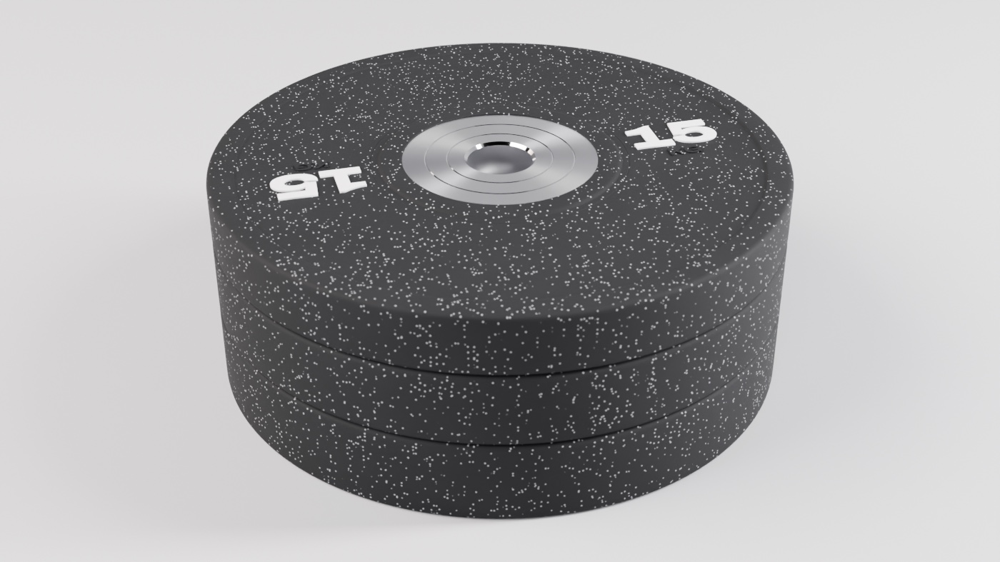
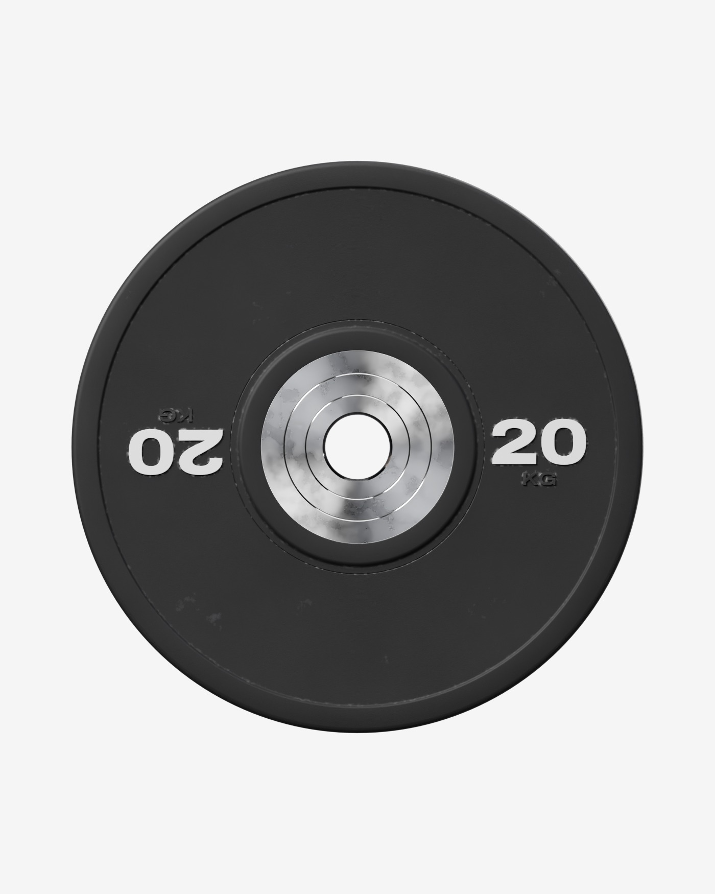
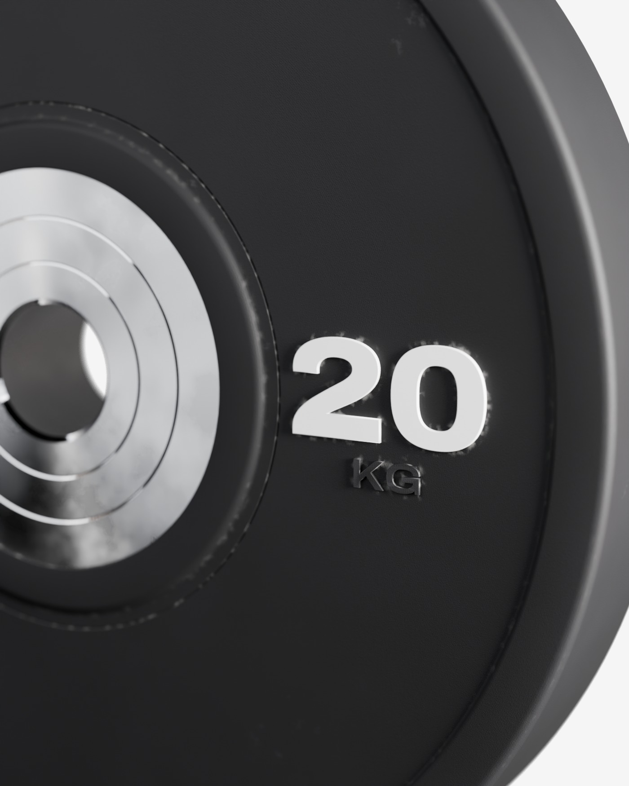
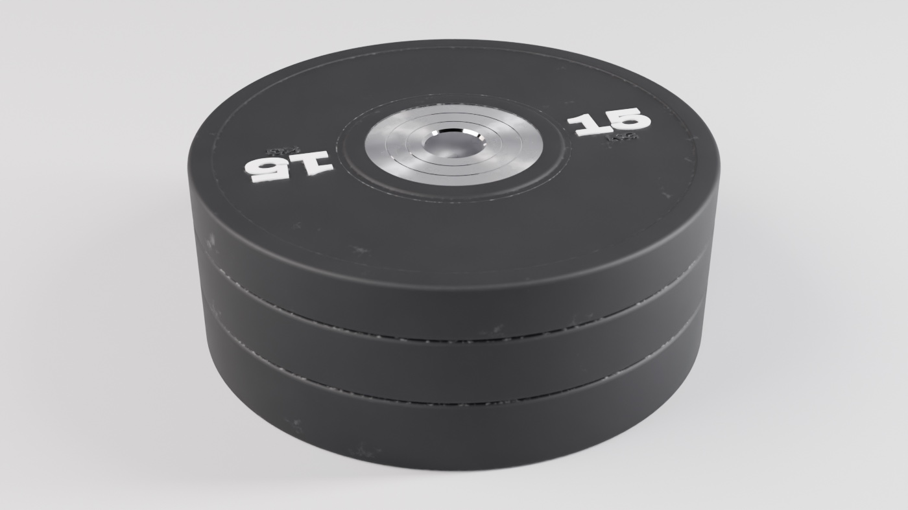

21/11/2026 · étape 5 · police A (Archivo Expanded) · Blender et Cycles
Le design ne change pas. On travaille ce qui rend un objet vrai (la texture, la lumière), puis ce qui le rend à soi (la couleur, les détails). Chaque piste est montrée sous plusieurs plans.
Ce qui rend un rendu réaliste
1La lumière d'un vrai studio. Une image d'éclairage photographiée dans un studio (Poly Haven, libre de droits) éclaire maintenant les objets. Les reflets de l'acier et du caoutchouc sont ceux d'un vrai lieu, plus seulement ceux de mes lampes.
2Rien n'est parfaitement lisse. Le grain du moule, les anneaux de moulage, une brillance qui varie un peu d'un endroit à l'autre : c'est ce qui manquait au disque.
3La matière. Une légère marbrure de couleur, et pour le moucheté les grains du caoutchouc recyclé.
4La vie. Des traces, des bords usés, de la craie (la texture « vécu »). À doser : trop, et l'objet paraît sale.
5Les plans. La lumière rasante révèle la texture, la pile montre l'épaisseur, la rangée montre la gamme.
La personnalisation dans l'app
Pour chaque équipement, l'utilisateur choisirait une couleur (les huit ci-contre, ou plus), une finition du métal (acier, noir, laiton) et un accent (tranche, face ou chiffres de couleur).
Un thème appliquerait les mêmes choix à tout son matériel en une fois : tout rose, noir et laiton…
Les modèles sont prêts : la couleur, la texture et les accents sont des réglages, pas des modèles différents. Il n'y a rien à remodéliser.
Dans l'app, les textures fines (grain, mouchetures) seront « cuites » dans des images de texture. On le vérifiera au test sur l'iPhone.
Mon avis
Disque : le moulé par défaut. Il est réaliste sans être sale, et il marche dans toutes les couleurs.
Le satiné et le moucheté en options de style. Le vécu, plutôt pour les images de présentation que dans l'app.
Haltère : le grain gros se lit mieux de loin. À comparer avec le fin sur les gros plans.
Les accents (tranche, face de couleur) gardent le noir sobre que tu aimes, tout en laissant de la place à la couleur.
Questions
Quelle texture pour le disque ? Et pour l'haltère, le grain fin ou le gros ?
Les coloris : lesquels garder, et lesquels ajouter ?
Parmi les designs (insert noir ou laiton, tranche, face, chiffres de couleur, tout noir), lesquels deviennent des options ?
La suite : la barre et les colliers dans le même style, ou les pièces communes des machines ?
Le disque · les textures
noir · de face, en lumière rasante, en pile
1
Moulé
Le caoutchouc mat tel qu'il sort du moule : grain fin, anneaux de moulage à peine visibles, brillance qui varie légèrement.

De face, façon catalogue
En lumière rasante : la texture
En pile : la tranche et le dessus
2
Satiné
L'uréthane : surface lisse et satinée, un vernis léger, un très léger « peau d'orange ». Le plus haut de gamme.

De face, façon catalogue

En lumière rasante : la texture

En pile : la tranche et le dessus
3
Moucheté
Le caoutchouc recyclé des salles : de petites mouchetures grises dans la masse. Très reconnaissable.

De face, façon catalogue

En lumière rasante : la texture

En pile : la tranche et le dessus
4
Vécu
Le moulé après des mois de salle : traces brillantes, bords usés, un peu de craie dans les creux, l'acier marqué de doigts.

De face, façon catalogue

En lumière rasante : la texture

En pile : la tranche et le dessus
Le disque · les coloris
texture moulée · chiffres blancs sur les foncés, anthracite sur les clairs